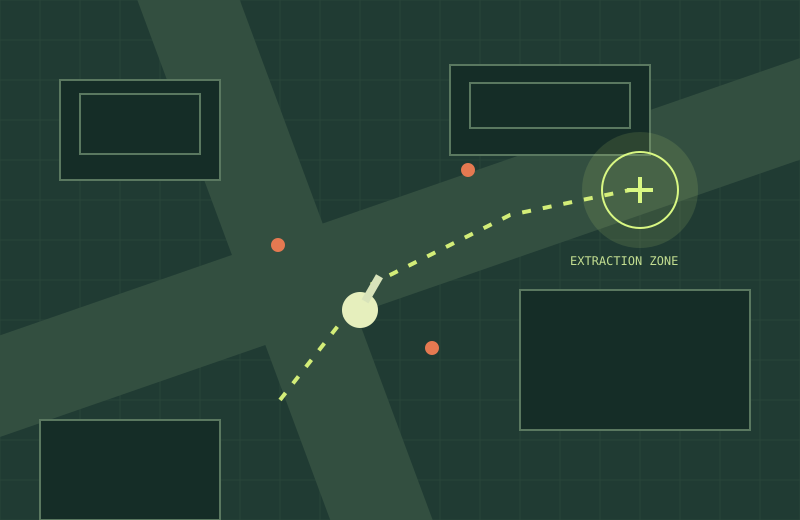
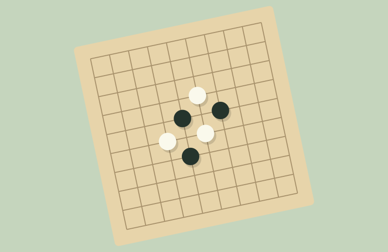

浏览器试玩
A PERSONAL PLAYGROUND / VOL. 01
保持清醒，
保持玩心。
我是 soberheart。把脑海里的想法变成可以玩的世界，
也在这里收藏那些让人忍不住再来一局的小作品。
GAME DESIGN✳AI EXPERIMENTS✳JUST FOR FUN

FEATURED PROJECT001 / SH
TACTICAL · SURVIVALEVACUATION
↗EVACUATION
COMMAND
取得情报。活着撤离。
01 / MADE BY ME
把想法，做成作品03
从玩法规则到可运行的原型。
这些是我的一些尝试。

Windows 本地运行本地部署
FoxGo 的棋力与分析由 KataGo 提供；图文平台基于 ai-passage-creator 二次开发。能力范围与上游署名见项目说明。
02 / THE GOOD STUFF
别人的脑洞，也很好玩09
一些值得打开的 AI 游戏实验。点击卡片，去作者的网站玩。
还没有找到这个游戏，试试其他关键词。
收藏作品归各自作者所有；AI 参与方式依据作者或来源说明，未将所有作品视为 one-shot。封面为本站主题插画，并非游戏截图。站外游戏在新窗口打开。
03 / BEHIND THE SCREEN
你好，我是 soberheart。
也叫黄继峰。关注游戏系统、玩法原型和 AI 工具体验。
喜欢琢磨「为什么好玩」，也喜欢把答案做出来。
MAKE THEM PLAYABLE.